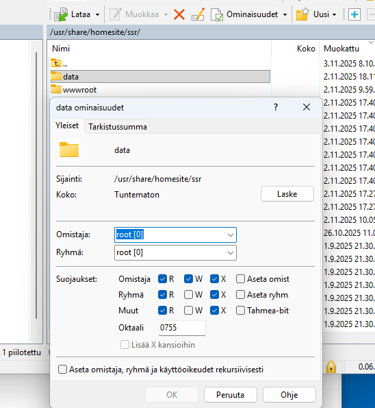
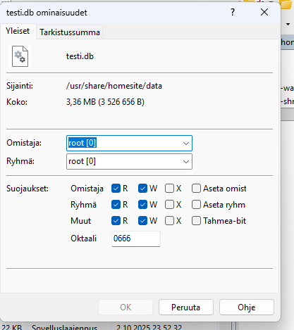
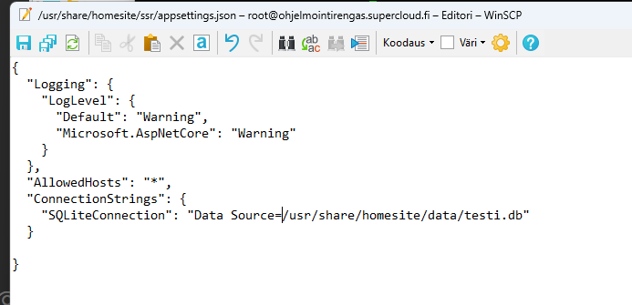
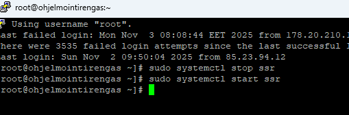
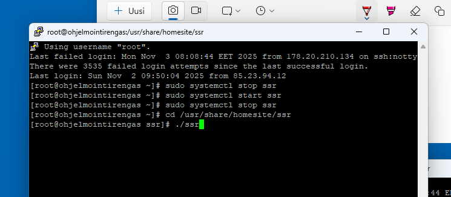
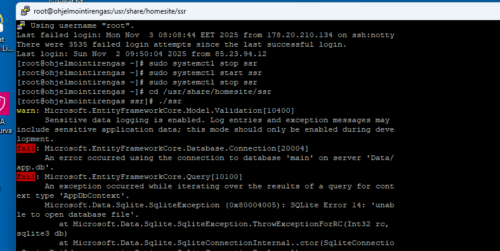
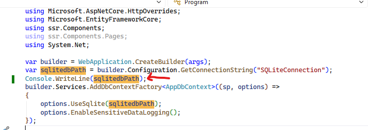
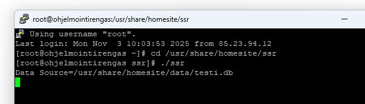

Jaettu kansio
Tämä ongelma ei oikeastaan ole ohjelmointiongelma, vaan puhdasta käyttöympäristön virittelyä.
Pitää vain tietää pari perusasiaa Linuxista. Tehtävän tavoitteena on:
- Luoda palvelimelle yhteinen kansio ja määrittää sen oikeudet.
- Asettaa sovelluksen datapolku oikein.
- Selvittää virhetilanteet.
Yhteinen kansio


WinSCP on vaivattomin tapa tehdä muutokset, mutta toki homma onnistuu myös komentoriviltä. Luodaan datakansio muiden järjestelmään liittyvien kansioiden rinnalle, niin se löytyy helposti, kun seuraavan kerran etsii tietoja.
Siirretään datatiedostot asennuskansiosta sinne ja laitetaan tiedoston nimeksi alisivuston nimi, niin nimeäminen on johdonmukaista.
Sovelluksen datapolku

Sovelluksen tietokantapolku on määritetty sovelluskansiossa olevassa appsettings.json-tiedostossa. Tiedostojen etämuokkaus on melko vaivatonta WinSCP:llä,
jos Vimin tai Nanon komentorivikomennot ovat kadonneet selkäytimestä.
Sovelluksen käynnistäminen


Putty on yleisin väline, jolla etäkäytetään komentoriviltä Linux-palvelimia Windowsista. Peruskomennot, ja kaikki näyttää olevan ok (kuva 1).
Sivulle menon jälkeen se ei kuitenkaan näytä toimivan, joten aloitetaan virheenjäljitys. Sammutetaan palvelu ja käynnistetään se sovelluskansiosta komentoriviltä.
Tämä on vain yksi tapa jäljittää ongelmia, mutta minusta yksinkertaisin (kuva 2).
Virheenjäljitys


Pikavilkaisulla vaikuttaisi jonkinlaiselta kovakoodaukselta (kuva 1).
Todennäköisesti ei ole siitä kysymys, mutta käydään koodipuolella lisäämässä vähän lokia.
Erilaisia lokitusjärjestelmiä on useita, mutta konsoli riittää aika pitkälle (kuva 2).
Virheenjäljitys 2

Polku on kunnossa. Missä lienee ollut virhe, eivätkö tallennukset menneet perille vai mitä, mutta nyt toimii.